Hazel 游戏引擎笔记 031：顶点缓冲区布局
本节来源：The Cherno 游戏引擎系列第 31 讲“顶点缓冲区布局”，时长约 49 分 16 秒。
原课程与 Hazel 代码作者：The Cherno。代码参考提交：e8eef16。
本文由视频字幕重构、翻译并整理，不是官方教材；术语和代码以原视频及同期 Hazel 仓库为准。
本节目标
上一讲已经把 Vertex Buffer 和 Index Buffer 从 Application 中抽到通用接口与 OpenGL 实现后面。但顶点属性仍然由一组写死的数字描述：
glVertexAttribPointer(
0, 3, GL_FLOAT, GL_FALSE,
3 * sizeof(float),
nullptr);
这段代码同时隐藏了四项信息：
- Shader 中的属性位置；
- 每个属性包含几个基础分量；
- 一条完整顶点记录占多少字节；
- 属性在一条顶点记录中的起始偏移。
本讲的目标，是把这些数字改写成可读、可复用、可跨渲染 API 表达的布局描述。最终希望上层代码写成：
BufferLayout layout = {
{ ShaderDataType::Float3, "a_Position" },
{ ShaderDataType::Float4, "a_Color" }
};
本讲完成的内容：
- 解释顶点属性、顶点缓冲区和顶点数组之间的关系；
- 建立跨 API 的
ShaderDataType； - 建立
BufferElement，描述单个顶点属性； - 建立
BufferLayout，自动计算偏移和步长； - 为
VertexBuffer增加SetLayout()与GetLayout()； - 使用初始化列表写出接近 Shader 声明形态的布局；
- 按布局自动调用
glVertexAttribPointer()； - 为三角形加入颜色数据并验证颜色插值；
- 定位一次由 Shader 未输出颜色导致的“黑三角形”问题；
- 保留 Vertex Array 与 Draw Call 的 OpenGL 代码，作为下一讲的技术债。
graph TD
A[Application 顶点数据] --> B[VertexBuffer]
B --> C[BufferLayout]
C --> D[BufferElement a_Position]
C --> E[BufferElement a_Color]
D --> F[自动计算 Offset / Size]
E --> F
F --> G[Stride]
G --> H[glVertexAttribPointer]
H --> I[Shader 属性输入]
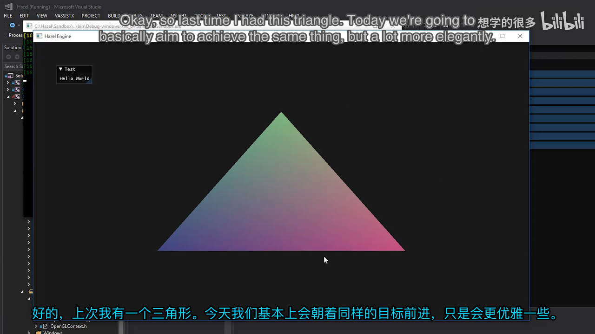
📷 重构前 Application 中写死的顶点属性配置
回到原视频 (00:06:39)
1. 顶点缓冲区本身只是字节块
(参考时间: 00:05:32)
CPU 上传给 GPU 的 Vertex Buffer 本质上是一段连续内存。OpenGL 知道这段内存的起始地址和字节数，却不知道其中的业务含义。
同样一段 float 数组，可以被解释成：
- 一个三浮点位置；
- 一个位置加一个四浮点颜色；
- 位置、法线、纹理坐标和切线；
- 多顶点交错存放的完整记录；
- 多个独立缓冲区分别提供不同属性。
要让 GPU 正确读取，必须告诉它：
- 从哪个字节开始；
- 每隔多少字节跳到下一个顶点；
- 一个属性由几个基础类型组成；
- 基础类型是
float、int还是其他格式； - 是否需要把整数归一化成浮点数。
这就是顶点缓冲区布局需要表达的内容。
flowchart LR
A[连续字节块] --> B{布局解释}
B --> C[位置 Float3]
B --> D[颜色 Float4]
B --> E[法线 Float3]
B --> F[纹理坐标 Float2]
2. 属性状态实际存放在哪里
(参考时间: 00:07:53)
glVertexAttribPointer() 描述的是 Vertex Buffer 中的数据，但 OpenGL 会把这份属性配置保存在当前绑定的 Vertex Array Object 中。
因此必须区分两层关系：
- Vertex Buffer 保存顶点原始数据；
- Vertex Array 保存如何读取这些数据的属性状态。
一个 Vertex Array 可以关联多个 Vertex Buffer，也可以让多个属性共享同一个交错缓冲区。
graph TD
A[Vertex Array Object] --> B[Attribute 0: a_Position]
A --> C[Attribute 1: a_Color]
B --> D[Interleaved Vertex Buffer]
C --> D
A --> E[可选的其他 Vertex Buffer]
当前相机三角形采用交错布局：每个顶点记录先放 3 个位置浮点，再放 4 个颜色浮点。全部记录连续排列，读取属性时依靠 stride 跳过一整条顶点记录。
另一种方案是为位置、颜色、法线分别创建 Vertex Buffer。OpenGL 不强制选择某一种方案，但绝大多数场景会把常用属性交错在同一个缓冲区中，以提高顶点数据的局部性。
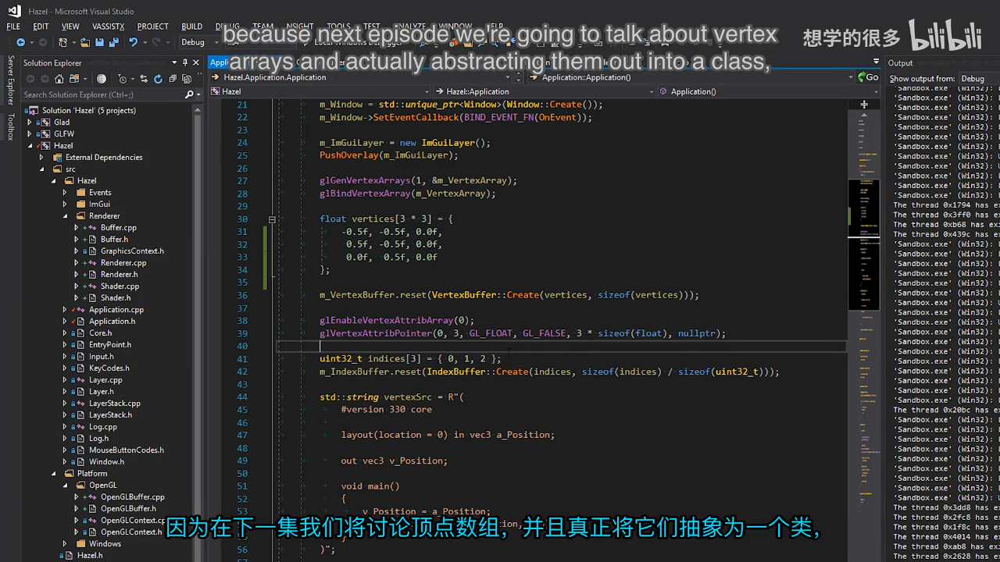
📷 交错顶点数据与独立顶点缓冲区的选择
回到原视频 (00:09:37)
3. 现有属性配置与 Shader 的对应关系
(参考时间: 00:10:07)
Shader 中的属性声明已经给出了布局的高层语义：
layout(location = 0) in vec3 a_Position;
layout(location = 1) in vec4 a_Color;
对应到 OpenGL：
| Shader 声明 | 位置 | 基础类型 | 分量数 | 字节偏移 |
|---|---|---|---|---|
vec3 a_Position |
0 | GL_FLOAT |
3 | 0 |
vec4 a_Color |
1 | GL_FLOAT |
4 | 12 |
每个顶点共有 7 个浮点，所以步长为：
7 * sizeof(float) = 28 bytes
如果把位置与颜色拆成两个缓冲区，每个缓冲区的 stride 和 offset 会不同。布局对象应该描述“内存怎样排列”，而不应该假定数据放在同一个 VBO 中。
sequenceDiagram
participant L as BufferLayout
participant V as VertexBuffer
participant VAO as Vertex Array
participant S as Shader
L->>V: Float3 a_Position
L->>V: Float4 a_Color
V->>VAO: 配置 location 0 / 1
VAO->>S: 在 Draw Call 时提供属性
OpenGL 不会在设置 glVertexAttribPointer() 时自动验证布局是否与 Shader 一致。DirectX 等 API 的验证更严格，但抽象层仍然需要显式描述数据。OpenGL 的宽松只意味着错误可能在画面上才暴露，并不意味着布局信息可以被省略。
4. 目标：让布局看起来就像 Shader
(参考时间: 00:13:23)
讲师追求的不只是“能运行”，而是客户端代码一眼就能看懂。理想的布局应当直接对应 Shader 声明中的数据：
BufferLayout layout = {
{ ShaderDataType::Float3, "a_Position" },
{ ShaderDataType::Float4, "a_Color" }
};
这个设计同时满足三个目标：
- 可读：类型和名字与 Shader 接近；
- 可扩展：可以继续加入纹理坐标、法线、颜色和切线；
- 跨 API：OpenGL、DirectX、Vulkan、Metal 都消费同一份描述。
flowchart TD
A[描述性布局] --> B[上层代码易读]
A --> C[自动 Offset / Stride]
A --> D[后端转换基础类型]
B --> E[减少手工数字错误]
C --> E
D --> F[保留跨 API 能力]
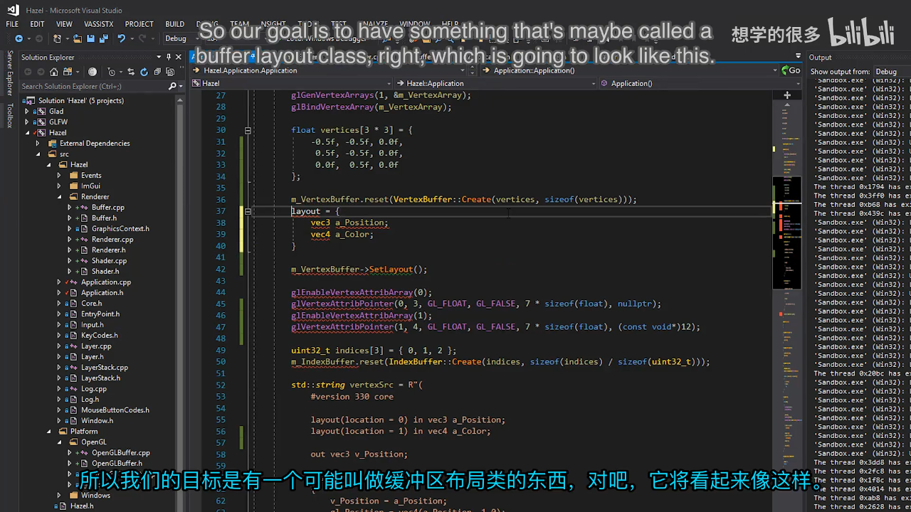
📷 目标中的 BufferLayout 初始化列表写法
回到原视频 (00:14:03)
5. ShaderDataType：跨 API 的数据类型
(参考时间: 00:14:37)
不能直接把 GLSL 的 vec3 或 GLM 的数学类型当作通用布局类型。vec3 与具体 Shader 语言绑定，数学库类型又会把渲染接口和数学库耦合在一起。
因此引入独立的 ShaderDataType：
enum class ShaderDataType
{
None = 0,
Float, Float2, Float3, Float4,
Mat3, Mat4,
Int, Int2, Int3, Int4,
Bool
};
命名采用类似 HLSL 的 Float3，而不是 GLSL 的 vec3。这不是说当前 Shader 已经使用 HLSL，而是让布局层保持 API 中立，并为未来 HLSL 路径留出空间。
classDiagram
class ShaderDataType {
<<enum>>
None
Float
Float2
Float3
Float4
Mat3
Mat4
Int
Int2
Int3
Int4
Bool
}
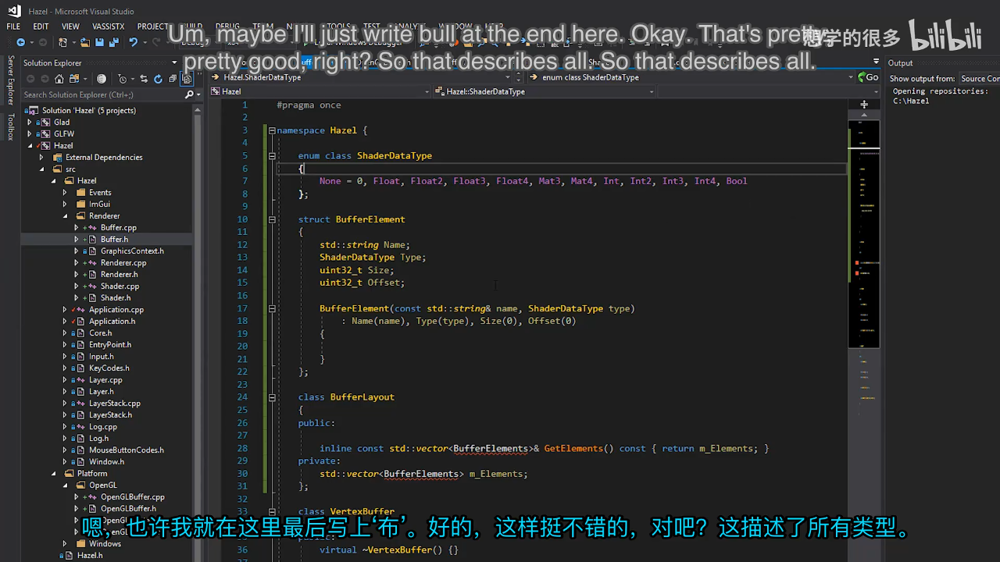
📷 ShaderDataType 覆盖浮点、整数、矩阵与布尔类型
回到原视频 (00:20:44)
6. 从 ShaderDataType 计算字节数
(参考时间: 00:21:02)
每种类型都需要能回答“占用多少字节”。当前统一假设 float 和 int 为 4 字节：
static uint32_t ShaderDataTypeSize(
ShaderDataType type)
{
switch (type)
{
case ShaderDataType::Float: return 4;
case ShaderDataType::Float2: return 4 * 2;
case ShaderDataType::Float3: return 4 * 3;
case ShaderDataType::Float4: return 4 * 4;
case ShaderDataType::Mat3: return 4 * 3 * 3;
case ShaderDataType::Mat4: return 4 * 4 * 4;
case ShaderDataType::Int: return 4;
case ShaderDataType::Int2: return 4 * 2;
case ShaderDataType::Int3: return 4 * 3;
case ShaderDataType::Int4: return 4 * 4;
case ShaderDataType::Bool: return 1;
}
HZ_CORE_ASSERT(false, "Unknown ShaderDataType!");
return 0;
}
Float3 的大小是 12 字节，Float4 是 16 字节。当前只计算紧凑排列大小，还没有处理不同后端的矩阵对齐规则。这个抽象层先把最常见的顶点属性描述统一起来。
None 没有单独分支。它不是合法的属性类型；如果误传到函数末尾，断言会暴露错误。
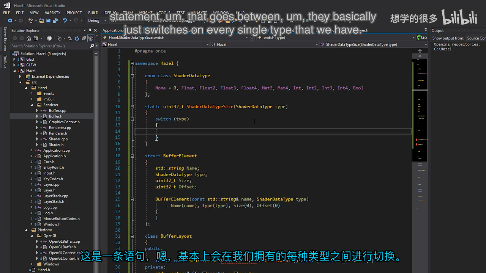
📷 ShaderDataTypeSize 的 switch 分支与字节计算
回到原视频 (00:21:30)
7. BufferElement：描述一个顶点属性
(参考时间: 00:17:15)
单个属性由 BufferElement 表示：
struct BufferElement
{
std::string Name;
ShaderDataType Type;
uint32_t Size;
uint32_t Offset;
bool Normalized;
BufferElement() {}
BufferElement(
ShaderDataType type,
const std::string& name,
bool normalized = false)
: Name(name),
Type(type),
Size(ShaderDataTypeSize(type)),
Offset(0),
Normalized(normalized)
{
}
};
各字段的职责如下：
Name：与 Shader 属性名对应，便于阅读，也方便未来对接需要名称的 API；Type：跨 API 的类型语义；Size：该属性的字节数；Offset：从一条顶点记录的起点到该属性的字节偏移；Normalized：整数属性是否需要归一化。
Size 可以在构造时立即计算；Offset 不能，因为它取决于同一布局中排在前面的属性。
默认构造函数不是装饰。BufferElement 和 BufferLayout 需要放进容器，缺少默认构造会在编译阶段报错。
classDiagram
class BufferElement {
+string Name
+ShaderDataType Type
+uint32_t Size
+uint32_t Offset
+bool Normalized
+GetComponentCount() uint32_t
}
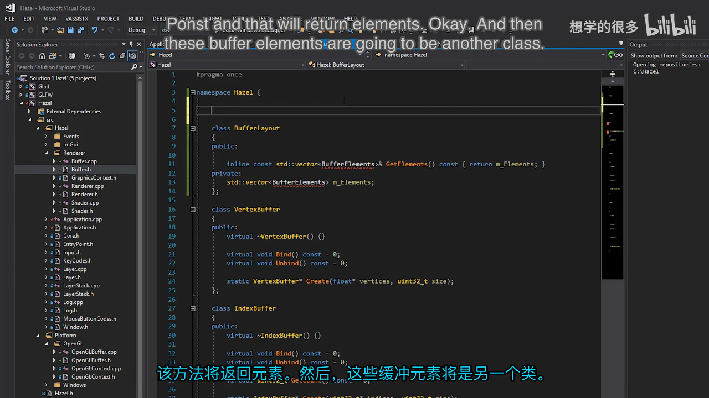
📷 BufferElement 保存名称、类型、大小、偏移与归一化状态
回到原视频 (00:17:15)
8. Component Count 不是矩阵元素数
(参考时间: 00:32:24)
OpenGL 的 glVertexAttribPointer() 不接受 Float3 这样的复合类型。它需要两项信息：
- 基础类型，例如
GL_FLOAT； - 该属性包含几个基础分量，例如 3。
因此 BufferElement 还需要返回 component count：
uint32_t GetComponentCount() const
{
switch (Type)
{
case ShaderDataType::Float: return 1;
case ShaderDataType::Float2: return 2;
case ShaderDataType::Float3: return 3;
case ShaderDataType::Float4: return 4;
case ShaderDataType::Mat3: return 3 * 3;
case ShaderDataType::Mat4: return 4 * 4;
case ShaderDataType::Int: return 1;
case ShaderDataType::Int2: return 2;
case ShaderDataType::Int3: return 3;
case ShaderDataType::Int4: return 4;
case ShaderDataType::Bool: return 1;
}
HZ_CORE_ASSERT(false, "Unknown ShaderDataType!");
return 0;
}
这里不把 component count 缓存成成员，因为调用频率不高，额外保存只会增加布局对象的数据量。直接由类型转换更简单。
矩阵类型返回 3 * 3 或 4 * 4，为未来上传 uniform 或扩展属性描述保留完整分量信息。当前顶点属性仍主要使用 Float3 和 Float4。
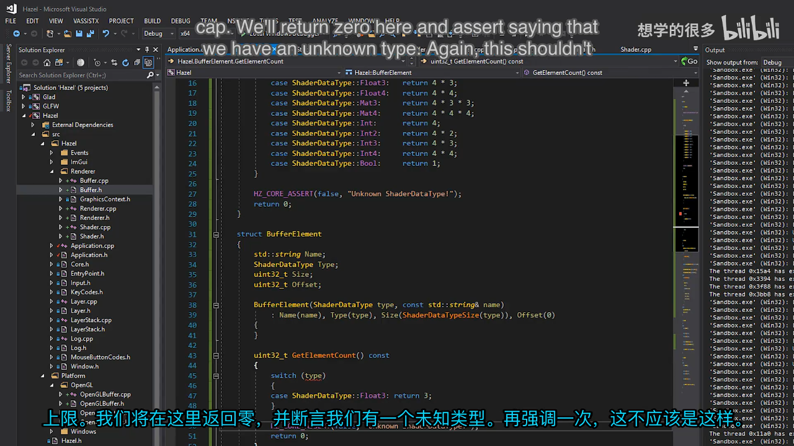
📷 GetComponentCount 负责把跨 API 类型转换成 OpenGL 所需分量数
回到原视频 (00:34:19)
9. BufferLayout：从初始化列表得到元素数组
(参考时间: 00:23:48)
BufferLayout 内部保存 BufferElement 数组：
class BufferLayout
{
public:
BufferLayout() {}
BufferLayout(
const std::initializer_list<BufferElement>& elements)
: m_Elements(elements)
{
CalculateOffsetsAndStride();
}
inline uint32_t GetStride() const
{
return m_Stride;
}
inline const std::vector<BufferElement>&
GetElements() const
{
return m_Elements;
}
private:
std::vector<BufferElement> m_Elements;
uint32_t m_Stride = 0;
};
为什么构造函数不直接接收 const std::vector<BufferElement>&？
如果写成 BufferLayout layout = { ... };，从大括号列表到 vector 需要一次隐式转换，从 vector 到 BufferLayout 又需要一次隐式转换。C++ 不允许同一条初始化链里连续发生两次用户定义转换。
直接接收 std::initializer_list<BufferElement> 后，大括号列表可以一步构造布局，再在成员初始化列表中复制成 vector。
flowchart LR
A[initializer_list] --> B[BufferLayout]
A -. 两次隐式转换不允许 .-> C[vector]
C -. 再构造 .-> B
A --> D[成员 vector]
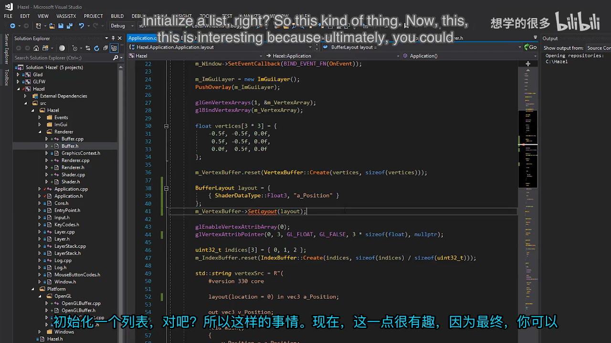
📷 BufferLayout 的初始化列表构造函数与元素容器
回到原视频 (00:24:00)
10. 自动计算 Offset 与 Stride
(参考时间: 00:26:07)
有了完整元素列表后，就可以计算每条属性在顶点记录中的位置：
void CalculateOffsetsAndStride()
{
uint32_t offset = 0;
m_Stride = 0;
for (auto& element : m_Elements)
{
element.Offset = offset;
offset += element.Size;
m_Stride += element.Size;
}
}
算法是顺序累加：
- 第一个元素从偏移 0 开始；
- 当前元素大小加入累计偏移；
- 该累计值成为下一个元素的起点；
- 所有元素大小之和就是 stride。
例如布局为 Float3, Float4, Float3：
| 元素 | Size | Offset |
|---|---|---|
Float3 |
12 | 0 |
Float4 |
16 | 12 |
Float3 |
12 | 28 |
总 stride 为 12 + 16 + 12 = 40 字节。讲师在调试器中分别验证了前两项和三项布局，确认 offset 与 stride 都随元素变化自动更新。
flowchart TD
A[Offset = 0, Stride = 0] --> B[元素 Float3]
B --> C[Offset 0, 增加 12]
C --> D[元素 Float4]
D --> E[Offset 12, 增加 16]
E --> F[元素 Float3]
F --> G[Offset 28, 增加 12]
G --> H[Stride 40]
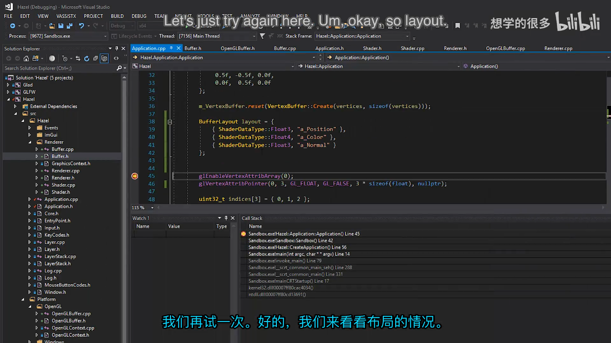
📷 调试器中的布局元素、偏移与总步长
回到原视频 (00:29:00)
11. 把布局挂到 VertexBuffer 上
(参考时间: 00:29:25)
布局描述的是 Vertex Buffer 的内存内容，因此通用接口增加：
virtual const BufferLayout& GetLayout() const = 0;
virtual void SetLayout(const BufferLayout& layout) = 0;
OpenGL 实现保存一份布局副本：
class OpenGLVertexBuffer : public VertexBuffer
{
public:
virtual const BufferLayout& GetLayout() const override
{
return m_Layout;
}
virtual void SetLayout(const BufferLayout& layout) override
{
m_Layout = layout;
}
private:
uint32_t m_RendererID;
BufferLayout m_Layout;
};
这里保存副本，而不是依赖调用方临时对象继续存活。应用可以创建局部布局、调用 SetLayout()，随后离开作用域；Vertex Buffer 仍然拥有完整描述。
OpenGL 实际上把属性状态存进 Vertex Array，但讲师把表面 API 放在 Vertex Buffer 上，因为布局从语义上描述的是缓冲区数据，而且 DirectX 也没有独立的 Vertex Array 对象。底层的 VAO 差异留到下一讲抽象。
sequenceDiagram
participant App
participant VB as VertexBuffer
participant GL as OpenGLVertexBuffer
App->>VB: Create(vertices, size)
App->>VB: SetLayout(layout)
VB->>GL: 保存 m_Layout
App->>VB: GetLayout()
VB-->>App: const BufferLayout&
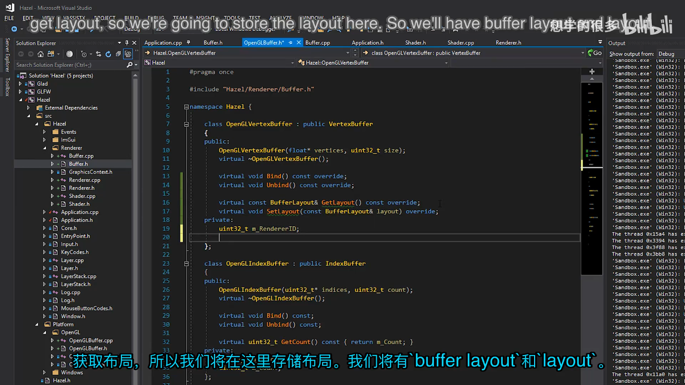
📷 OpenGLVertexBuffer 内部保存通用 BufferLayout
回到原视频 (00:30:17)
12. 为布局提供迭代能力
(参考时间: 00:31:14)
如果只暴露 GetElements()，调用端只能写：
for (const auto& element : layout.GetElements())
虽然可以运行，但讲师希望布局本身就能直接迭代：
for (const auto& element : layout)
因此 BufferLayout 提供 begin() 与 end()：
std::vector<BufferElement>::iterator begin()
{
return m_Elements.begin();
}
std::vector<BufferElement>::iterator end()
{
return m_Elements.end();
}
std::vector<BufferElement>::const_iterator begin() const
{
return m_Elements.begin();
}
std::vector<BufferElement>::const_iterator end() const
{
return m_Elements.end();
}
非 const 版本支持需要时修改元素；const 版本让 GetLayout() 返回的只读引用也能参与范围 for。
最初只实现非 const 迭代器时，const BufferLayout& 无法进入范围 for。补上 const iterator 后，布局可以被安全地读取，同时不能让调用者绕过封装修改内部容器。
classDiagram
class BufferLayout {
-vector~BufferElement~ m_Elements
-uint32_t m_Stride
+begin() iterator
+end() iterator
+begin() const_iterator
+end() const_iterator
+GetStride() uint32_t
+GetElements() vector
}
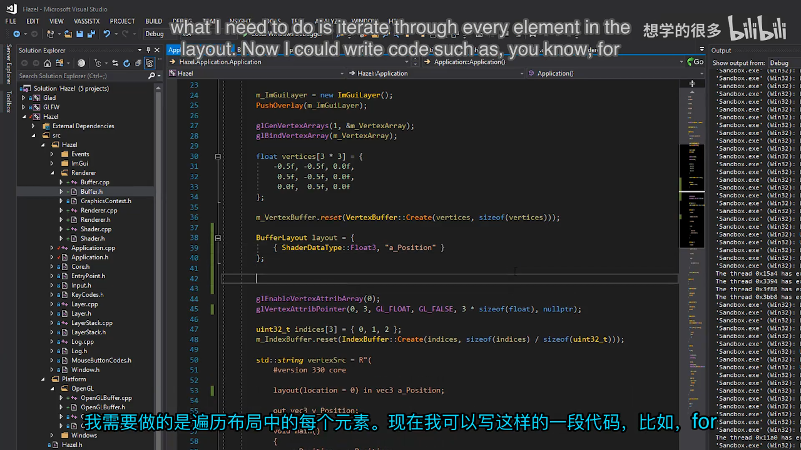
📷 通过 begin/end 让 BufferLayout 直接参与范围 for
回到原视频 (00:31:14)
13. 按布局自动配置 Shader 属性
(参考时间: 00:35:18)
OpenGL 需要把 ShaderDataType 映射成基础 OpenGL 类型：
static GLenum ShaderDataTypeToOpenGLBaseType(
ShaderDataType type)
{
switch (type)
{
case ShaderDataType::Float:
case ShaderDataType::Float2:
case ShaderDataType::Float3:
case ShaderDataType::Float4:
case ShaderDataType::Mat3:
case ShaderDataType::Mat4:
return GL_FLOAT;
case ShaderDataType::Int:
case ShaderDataType::Int2:
case ShaderDataType::Int3:
case ShaderDataType::Int4:
return GL_INT;
case ShaderDataType::Bool:
return GL_BOOL;
}
HZ_CORE_ASSERT(false, "Unknown ShaderDataType!");
return 0;
}
这个函数暂时放在 Application.cpp，因为它只是让当前演示跑起来的 OpenGL 转换层。下一阶段应把它移进 OpenGL 平台实现，避免上层代码接触 GLenum、GL_FLOAT 等平台专用名称。
flowchart LR
A[ShaderDataType] --> B{基础类型}
B -- Float / Float2 / Float3 / Float4 / Mat3 / Mat4 --> C[GL_FLOAT]
B -- Int / Int2 / Int3 / Int4 --> D[GL_INT]
B -- Bool --> E[GL_BOOL]
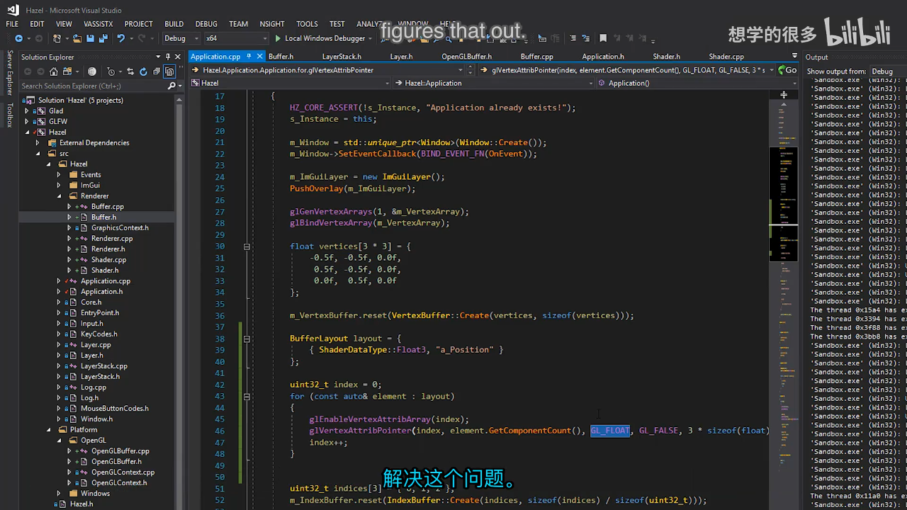
📷 ShaderDataType 到 OpenGL 基础类型的转换函数
回到原视频 (00:36:00)
14. 用循环设置每个顶点属性
(参考时间: 00:37:42)
有了布局后，原先手写的两次 glVertexAttribPointer() 可以改为统一循环：
uint32_t index = 0;
const auto& layout = m_VertexBuffer->GetLayout();
for (const auto& element : layout)
{
glEnableVertexAttribArray(index);
glVertexAttribPointer(
index,
element.GetComponentCount(),
ShaderDataTypeToOpenGLBaseType(element.Type),
element.Normalized ? GL_TRUE : GL_FALSE,
layout.GetStride(),
(const void*)element.Offset);
index++;
}
每个参数现在都有明确来源：
| 参数 | 来源 |
|---|---|
| location | 当前循环索引 |
| component count | element.GetComponentCount() |
| base type | ShaderDataTypeToOpenGLBaseType(element.Type) |
| normalized | element.Normalized |
| stride | layout.GetStride() |
| byte offset | element.Offset |
glVertexAttribPointer() 的最后一个参数类型是 const void*，这里却需要传字节偏移。因此先把整数 Offset 转成指针形式。OpenGL 不会解引用这个地址，只把它当作相对于缓冲区起点的偏移。
sequenceDiagram
participant App
participant Layout
participant Element
participant GL as OpenGL
loop 每个 BufferElement
App->>Layout: GetStride()
App->>Element: GetComponentCount()
App->>Element: Type / Normalized / Offset
App->>GL: glEnableVertexAttribArray(index)
App->>GL: glVertexAttribPointer(...)
end
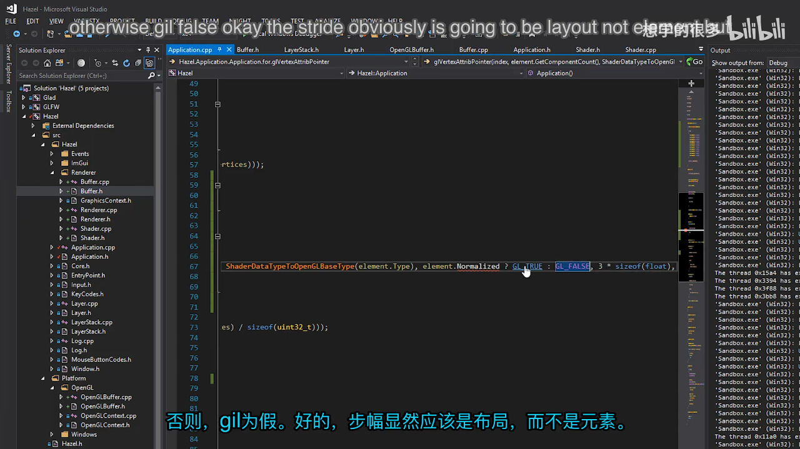
📷 布局中的每个元素被转换为一次 glVertexAttribPointer 调用
回到原视频 (00:38:10)
15. 用位置数据验证原有三角形
(参考时间: 00:40:25)
第一步只使用位置属性：
BufferLayout layout = {
{ ShaderDataType::Float3, "a_Position" }
};
m_VertexBuffer->SetLayout(layout);
在这个阶段，布局会自动得到：
Float3.Size = 12；a_Position.Offset = 0；Stride = 12。
运行结果与原三角形一致，说明读取一个三浮点位置仍然正确。这个验证很重要，因为后续一旦 stride 或 offset 计算错误，三角形会消失、变形，或者把颜色数据误读为顶点坐标。
flowchart LR
A[仅位置布局] --> B[Offset 0]
A --> C[Size 12]
A --> D[Stride 12]
D --> E[三角形保持原样]
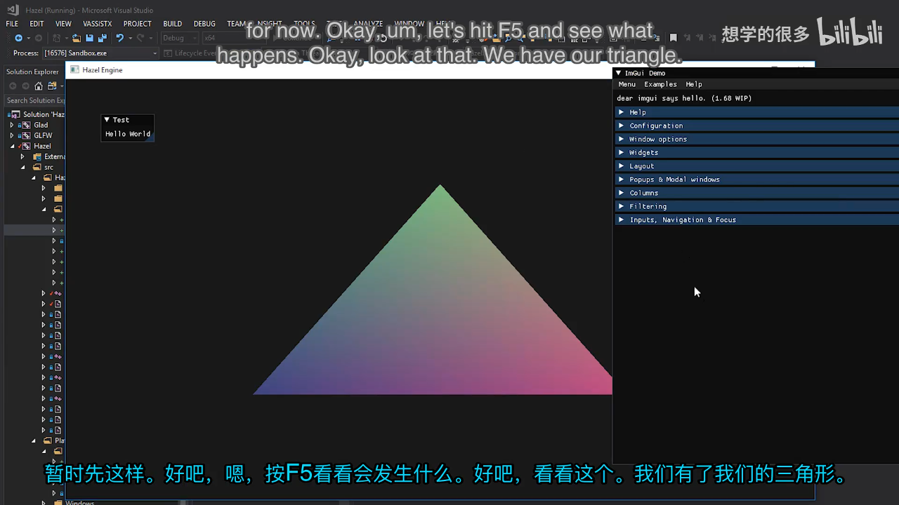
📷 单一 Float3 属性仍能正确渲染原三角形
回到原视频 (00:41:00)
16. 加入颜色后，布局自动变化
(参考时间: 00:41:04)
顶点数组从每个顶点 3 个浮点扩展为 7 个浮点：
float vertices[3 * 7] = {
-0.5f, -0.5f, 0.0f, 0.8f, 0.2f, 0.8f, 1.0f,
0.5f, -0.5f, 0.0f, 0.2f, 0.3f, 0.8f, 1.0f,
0.0f, 0.5f, 0.0f, 0.8f, 0.8f, 0.2f, 1.0f
};
布局增加第二个元素：
BufferLayout layout = {
{ ShaderDataType::Float3, "a_Position" },
{ ShaderDataType::Float4, "a_Color" }
};
自动计算结果变为：
a_Position.Size = 12，Offset = 0；a_Color.Size = 16，Offset = 12；Stride = 28。
最先只把颜色放进顶点缓冲，不修改 Shader 对颜色的使用方式。结果仍是原来的三角形，说明新的 stride 与第一个属性的 offset 没有破坏位置读取。
graph TD
A[一条顶点记录 28 bytes] --> B[0..11 a_Position Float3]
A --> C[12..27 a_Color Float4]
B --> D[location 0]
C --> E[location 1]
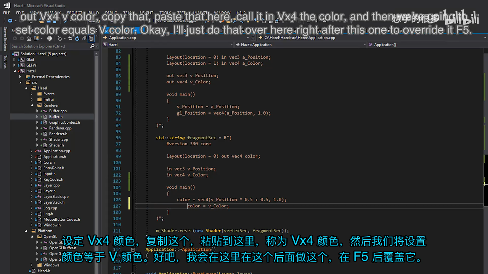
📷 增加颜色属性后，布局自动把 Stride 更新为 28 字节
回到原视频 (00:42:50)
17. Shader 传递颜色与黑三角形调试
(参考时间: 00:42:28)
Vertex Shader 接收颜色并交给 Fragment Shader：
layout(location = 0) in vec3 a_Position;
layout(location = 1) in vec4 a_Color;
out vec3 v_Position;
out vec4 v_Color;
void main()
{
v_Position = a_Position;
v_Color = a_Color;
gl_Position = vec4(a_Position, 1.0);
}
Fragment Shader 增加同名的输入：
in vec3 v_Position;
in vec4 v_Color;
layout(location = 0) out vec4 color;
void main()
{
color = vec4(v_Position * 0.5 + 0.5, 1.0);
color = v_Color;
}
第一次运行出现黑三角形。问题不是布局、stride 或 offset，而是 Vertex Shader 中还没有把输入颜色赋给输出 v_Color。补上赋值后，颜色重新出现在三角形上。
这个插曲说明：抽象层计算正确，不代表 Shader 数据链路完整。调试时要分别检查：
- CPU 顶点数据是否包含颜色；
- Vertex Buffer 是否上传了完整记录；
- 布局的 offset 与 stride 是否正确；
- Shader 是否声明并连接了对应属性；
- Vertex Shader 是否把值传给 Fragment Shader。
flowchart TD
A[黑三角形] --> B{顶点颜色在 GPU 中吗}
B -- 是 --> C{布局配置正确吗}
C -- 是 --> D{Shader 输出 v_Color 吗}
D -- 否 --> E[补上 v_Color = a_Color]
E --> F[颜色恢复]
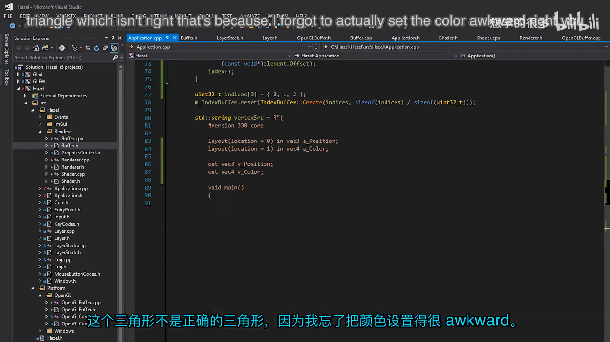
📷 黑三角形来自 Shader 未输出顶点颜色，而不是 BufferLayout 错误
回到原视频 (00:42:57)
18. 颜色插值与最终视觉结果
(参考时间: 00:43:16)
每个顶点在数组中拥有独立颜色。Vertex Shader 输出颜色后，光栅化阶段会在三角形内部对颜色进行插值：
- 顶点 0 偏粉；
- 顶点 1 偏蓝；
- 顶点 2 偏黄；
- 三角形中心由三者平滑混合。
第一轮使用接近纯色的 1.0、0.0 组合，颜色过于刺眼。讲师随后把分量调整为 0.8、0.2 等值，保留不同顶点的颜色差异，同时降低饱和度和视觉冲击。
graph TD
A[顶点 0 颜色] --> D[光栅化插值]
B[顶点 1 颜色] --> D
C[顶点 2 颜色] --> D
D --> E[三角形内部渐变]
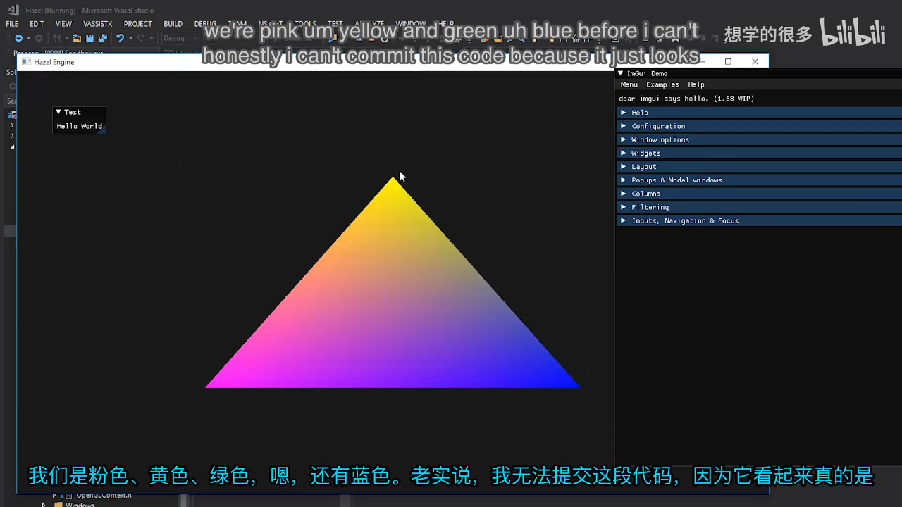
📷 三个顶点颜色经过插值形成渐变三角形
回到原视频 (00:43:39)
19. 收尾：局部布局、const 迭代器与最终代码
(参考时间: 00:44:23)
布局对象可以作为临时局部值传入 SetLayout()：
{
BufferLayout layout = {
{ ShaderDataType::Float3, "a_Position" },
{ ShaderDataType::Float4, "a_Color" }
};
m_VertexBuffer->SetLayout(layout);
}
离开作用域后，局部 layout 被销毁，但 OpenGLVertexBuffer 保存的是副本，所以渲染不受影响。
最终读取布局时使用 const 引用，并把循环整理为：
const auto& layout = m_VertexBuffer->GetLayout();
for (const auto& element : layout)
{
// 根据 element 配置顶点属性
}
这一版代码同时具备可读性和数据驱动能力：
- 代码中能直接看出
Float3 a_Position与Float4 a_Color； - 新增属性只需要修改顶点数据和布局；
- stride 与 offset 不再靠手工维护；
- OpenGL 专用类型转换仍被限制在应用层的局部 helper 中；
- 未来抽象 Vertex Array 时，可以把属性配置整体移入平台实现。
flowchart TD
A[定义 vertices] --> B[创建 VertexBuffer]
B --> C[构造 BufferLayout]
C --> D[SetLayout 保存副本]
D --> E[GetLayout 返回 const 引用]
E --> F[自动配置所有属性]
F --> G[Shader 使用 location 读取]
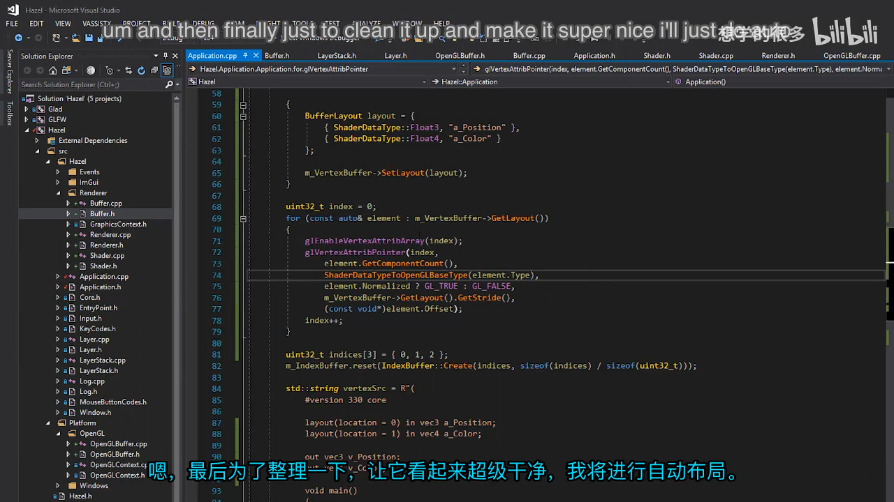
📷 最终代码通过自动引用和范围 for 完成布局驱动的属性配置
回到原视频 (00:45:39)
20. 当前边界与下一步
(参考时间: 00:46:40)
本讲已经让 Vertex Buffer 拥有布局描述，但属性配置代码仍直接写在 Application.cpp：
- 仍然直接包含 Glad；
- 仍然直接调用
glEnableVertexAttribArray()； - 仍然直接调用
glVertexAttribPointer()； - 仍然由应用层维护 VAO；
ShaderDataTypeToOpenGLBaseType()仍是一个临时 helper。
下一讲应把属性配置移入 OpenGL Vertex Array 实现，让应用只负责：
- 创建 Vertex Buffer；
- 创建 Vertex Array；
- 把带布局的 Vertex Buffer 交给 Vertex Array；
- 绑定 Vertex Array 并发出 Draw Call。
graph LR
A[本讲: VertexBuffer + BufferLayout] --> B[下一讲: VertexArray]
B --> C[属性配置进入 OpenGL 平台层]
C --> D[Application 不再调用 Glad]
D --> E[更完整的跨 API 抽象]
graph TD
A[Application] --> B[VertexArray interface]
B --> C[OpenGLVertexArray]
C --> D[VertexBuffer]
C --> E[BufferLayout]
C --> F[glVertexAttribPointer]
A --> G[Renderer / Draw Call]
21. 本节结论
本讲完成了 Hazel 顶点缓冲区布局系统的第一版：
- 明确 Vertex Buffer 只是数据，Vertex Array 保存读取状态；
- 建立跨 API 的
ShaderDataType； - 建立
BufferElement，保存名称、类型、大小、偏移和归一化标志； - 建立
BufferLayout，从初始化列表构造并自动计算 offset 与 stride； - 为布局提供 getter、迭代器和 const 迭代器；
- 为
VertexBuffer增加GetLayout()与SetLayout()； - 在 OpenGL 实现中保存布局副本；
- 按布局自动配置 component count、基础类型、normalized、stride 和 offset；
- 用位置与颜色两个属性验证 stride 和 offset；
- 通过黑三角形问题确认 Shader 数据链路也必须完整；
- 把 Vertex Array 抽象列为下一阶段任务。
这套设计的价值不在隐藏少量 OpenGL 调用，而在把“内存中一条顶点记录长什么样”变成所有渲染后端都能理解、客户端开发者也能一眼看懂的描述。